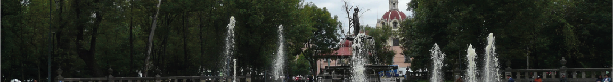
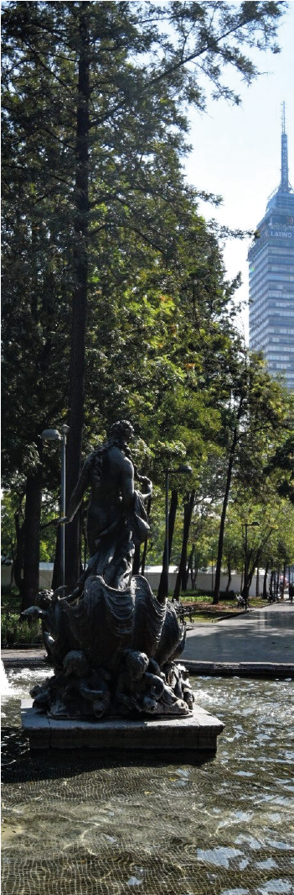

ALAMEDA CENTRAL

La Alameda Central es uno de los lugares más emblemáticos e históricos de la Ciudad de México. Fue fundada en 1592 por orden del virrey Luis de Velasco II y es considerada el parque público más antiguo de América Latina y del continente americano.
Antes de convertirse en parque, la zona funcionaba como un mercado en el límite occidental de la antigua Tenochtitlan. Durante el periodo virreinal, el virrey decidió crear un espacio verde para el descanso y recreación de los habitantes de la Nueva España. El nombre “Alameda” proviene de los álamos que originalmente fueron plantados en el lugar, árboles traídos desde España y Marruecos.
Con el paso de los siglos, la Alameda se convirtió en uno de los espacios sociales más importantes de la ciudad:
- lugar de paseo de la aristocracia virreinal,
- escenario de celebraciones públicas,
- punto de encuentro cultural,
- y símbolo urbano del Centro Histórico.
Durante el siglo XIX y principios del XX, el parque fue modernizado con:
- nuevas fuentes,
- esculturas,
- iluminación,
- jardines formales,
- y monumentos históricos.
En 2012 tuvo una gran restauración urbana donde se rehabilitaron:
- fuentes,
- esculturas,
- andadores,
- áreas verdes,
- e iluminación nocturna.
La Alameda Central es muy importante arquitectónicamente porque representa la evolución del urbanismo de la Ciudad de México durante más de 400 años. Su diseño está inspirado en jardines europeos formales y combina elementos:
- virreinales,
- neoclásicos,
- franceses,
- y del urbanismo moderno mexicano.
⛲ Fuentes monumentales
Entre 1770 y 1775 se colocaron fuentes de cantera inspiradas en la mitología grecorromana. Algunas de las más famosas son:
- Fuente de Neptuno,
- Fuente de Mercurio,
- Las Danaides,
- Afrodita,
- y La Primavera.
